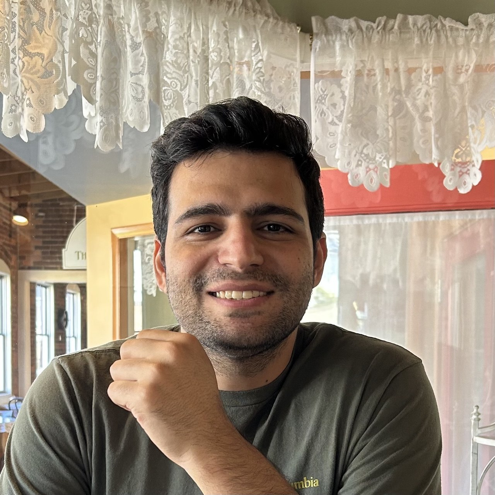

Continual learning
Online adaptation under changing data distributions.
Learning. Adapting. Remembering.
Machine learning researcher
I study how learning systems adapt to changing data while preserving useful knowledge.
My work focuses on online multimodal continual learning, self-supervised learning, and computer vision.
I am a PhD student in Electrical Engineering at West Virginia University, advised by Dr. Gianfranco Doretto, and a visiting student at the Scientific Computing and Imaging Institute at the University of Utah.
My research explores continual and self-supervised learning for visual and multimodal systems. I am interested in models that can learn online, respond to distribution shifts, and retain knowledge over time.
Download my CV
Online adaptation under changing data distributions.
Representations that connect visual and textual signals.
Visual recognition, representation learning, and robust perception.
Seyed Rasoul Hosseini, Omid Ahmadieh, Jeremy Dawson, Nasser Nasrabadi
Hamid Taheri, Seyed Rasoul Hosseini, Mohammad Ali Nekoui
International Journal of Intelligent Machines and Robotics
Mohammad Saeed Ebrahimi Saadabadi, Sahar Rahimi Malakshan, Seyed Rasoul Hosseini, Nasser Nasrabadi
IEEE IJCB · arXiv
Kavian Khanjani, Seyed Rasoul Hosseini, Hamid Taheri, Shahrzad Shashaani, Mohammad Teshnehlab
Seyed Rasoul Hosseini, Hamid Taheri, Mohammad Teshnehlab
A research path spanning control, computer vision, and continual learning.
Scientific Computing and Imaging Institute, University of Utah
Research in machine learning and computer vision, with emphasis on continual learning systems, under Dr. Gianfranco Doretto.
West Virginia University
Electrical Engineering. Advisor: Dr. Gianfranco Doretto.
Intelligent Systems Laboratory, K. N. Toosi University of Technology
Research on deep-learning methods for lane detection and related computer vision problems.
K. N. Toosi University of Technology
Thesis on lane detection for autonomous vehicles using image processing and deep learning.
Shahid Bahonar University of Kerman
Thesis on PLC-based simulation of a mineral water production line.
Coursework in machine learning, deep learning, and agentic AI.
Certificate of Competency
Course certificate · Offered through Coursera
Conference and journal service in computer vision, machine learning, and medical imaging.
Learning is a collective effort.
I welcome conversations about continual learning, computer vision, and research collaboration.
Always learning.